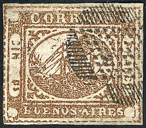
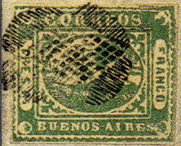
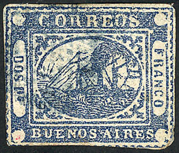
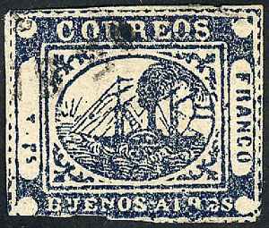
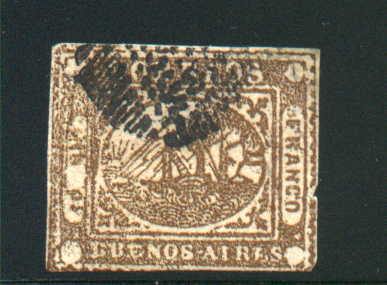
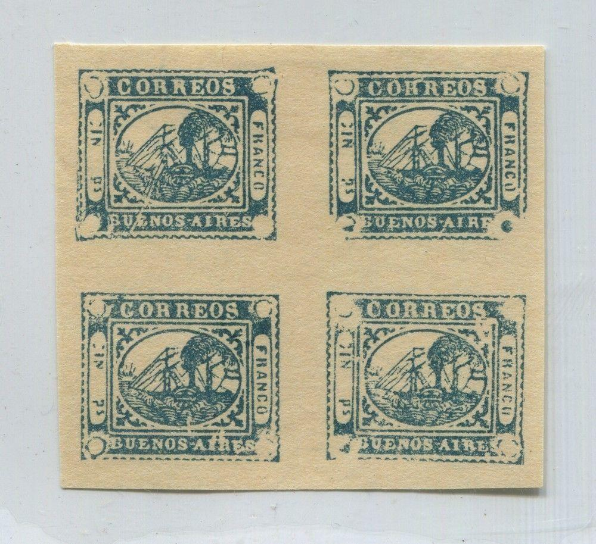

{kind=link}

(Genuine stamps)
Buenos Ayres
Return To Catalogue - Buenos Aires 1858 forgeries part 1 - Buenos Aires 1858 forgeries part 2 - Buenos Aires 1860 issue and miscellaneous - Buenos Aires Sperati forgeries - Argentine
Note: on my website many of the
pictures can not be seen! They are of course present in the
catalogue;
contact me if you want to purchase it.
ATTENTION, MANY OF THE STAMPS OF BUENOS AIRES ARE FORGERIES OR REPRINTS!



(Genuine stamps)
  


Genuine 3 p stamp?
2 p (DOS Ps) blue 3 p (TRES Ps) green 4 p (CUATO Ps) red 5 p (CINCO Ps) yellow 4 r (CUATO rs) brown 1 p (IN Ps) brown 1 p (IN Ps) blue (1859) 1 p (TO rs) blue (1859)
Value of the stamps |
|||
vc = very common c = common * = not so common ** = uncommon |
*** = very uncommon R = rare RR = very rare RRR = extremely rare |
||
| Value | Unused | Used | Remarks |
| 4 r, 1 p and 2 p | RR | RR | |
| 3 p, 4 p and 5 p | RRR | RRR | |
| Reprints/forgeries | c | - | |
The values 2 p, 3 p, 4 p and 5 p were issued on 29 April 1858. On 26 October of that year the values 1 p brown and 4 r followed. On 1 January 1859 the value 1 p (IN Ps) blue was issued followed finally by the 1 p (To Ps) blue in June 1859. The stamps were issued in sheets of 48 stamps ( 6 rows of 8 stamps) on slightly rough and lightly greyish paper (forgeries are often printed on too white smooth paper). They were printed very closely together. The 1 p blue 1859 issue exists in tete-beche (extremely rare).

Tete beche pair, not sure if this is genuine.
The values 2 p, 3 p, 4 p and 5 p were issued first in April 1858. The 4 r stamp was issued in October of that same year by changing the plates slightly so 'Ps' became 'rs'. A few stamps were forgotten, thus creating some stamps in the value 4 p in the colour brown. The 'CINCO' of the 5 p value was modified by erasing 'CO' and changing the other letters into 'UN', thus creating the value 1 p brown. The 'CUATO rs' (4 p) was again modified by removing 'CUA' resulting in 'TO rs'.
Diamond of dots with emergent rays.
Many forgeries exist and also unofficial reprints from the (stolen) original plates. Reprints exist made in 1890 with the original plates, the so-called Arata reprints, made by Pedro N.Arata. They were printed on very thick yellowish paper. Distinguishing charateristics can be found in: Dr. Julio César Arata (the son of Arata): Republica Argentina. Las Reimpresiones del Dr. Pedro N. Arata, de los Barquitos de Buenos Aires; in Los Barquitos de Pedro Arata. Selecciones Filatélicas Tomo 14. Sociedad Filatélica Argentina / Asociación Filatélica de la República Argentina. Editorial „La Diligencia“, Buenos Aires 1984 (http://www.klassische-philatelie.ch/arg/arg_buenosaires_nd.html). Some of the original printing plates were rendered unusable in 1893.



I've been told that these are 'Arata' reprints.
There also exist so-called Latour reprints, made with stolen printing plates around 1912. They even exist in bogus colors and in several types. Apparently they were also used in a book made by Peplow in 1925: "The Postage Stamps of Buenos Aires". The American philatelist Alfred.F. Lichtenstein obtained the plates later and made further reprints.


I've been told that these are Peplow (or Latour) reprints.

Peplow reprint made from the original plate:
Berlin reprint-forgeries seem to exist (if anybody has more information, please contact me). Apparently a German man came into possesion of seven of the (stolen) printing plates. It then ended up in the hands of Georg Bühler, who made some reprints (always in black) with them for a book on Buenos Aires: Georg Bühler: „Los Barquitos“. Neue Forschungsergebnisse über die 1. Emission von Buenos Aires. Selbstverlag des Autors, Berlin 1955 (information found on the same website as mentioned above http://www.klassische-philatelie.ch/arg/arg_buenosaires_nd.html, some images can also be found there). Ken Pugh told me that only 4 values were reprinted by Buehler. Another 4 were made by altering the printing plates. Panes of 48 stamps were also made (again all in black).
Some tete-beche reprints in black on paper watermarked with a
star (Lichtenstein reprint).
Reprint from the defaced plates (two horizontal and two vertical
lines over each stamp)
Click here for stamps of Buenos Aires issued in 1860 and miscellaneous.
Literature: "Barquitos of Buenos Aires Forgeries and Reprints" by Andres E. Gazzolo, 2012
{kind=link}
{kind=link}
{kind=link}
{kind=link}